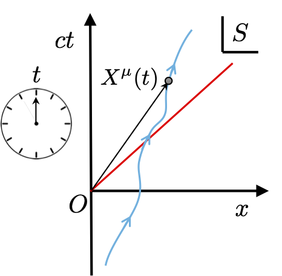
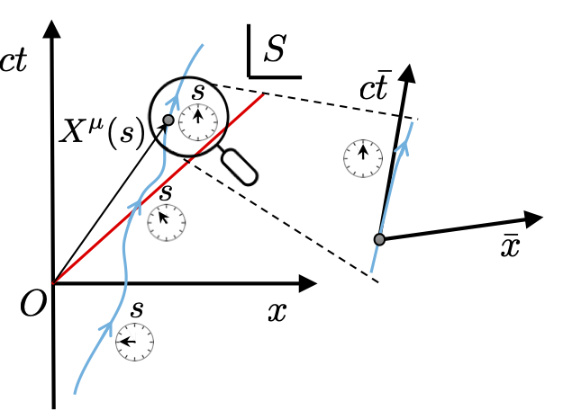
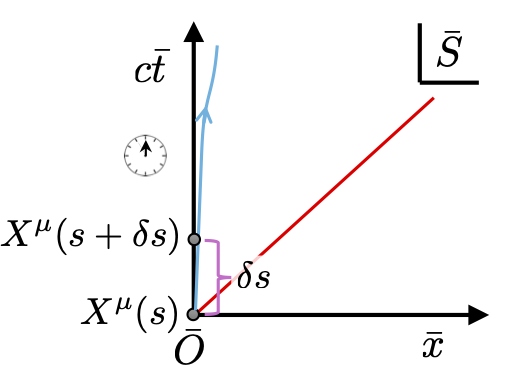

7 Relativistic kinematics
7.1 Describing the motion of a particle
Thus far we have spent a lot of time discussing constructing a general tensorial formalism for describing the physics in a relativistically covariant way between observers. It is time now for us to consider what the implications are of this formalism are for the motion of a single particle. In Newtonian classical mechanics the motion of a particle is described by a 3-vector \[ {\underline r}(t) = \left( \begin{array}{c} x(t) \\ y(t) \\ z(t) \end{array}\right), \] parameterised by the universal time \(t\). The motion of a particle in space and time then follows by solving Newton’s 2nd law which involves derivatives of \({\underline r}(t)\) with \(t\) as \[ \frac{{\rm d}^2}{{\rm d}t^2}{\underline r}(t) = {\underline F}(t), \] where \({\underline F}(t)\) is the net force acting on the particle at any instance in time.

Following this approach in special relativity would involve parameterising its space-time 4-vector \(\vec{X}\) of the particle in some frame \(S\) by the time coordinate of that frame \[ X^\mu(t) = \left( \begin{array}{c} ct \\ x(t) \\ y(t) \\ z(t) \end{array}\right) = \left( \begin{array}{c} ct \\ {\underline r}(t) \end{array}\right), \] thereby describing its trajectory through space-time. Naturally, we will need to consider its derivates with respect to its parameter giving \[ \frac{{\rm d}}{{\rm d}t}X^\mu(t) = \left( \begin{array}{c} c \\ \frac{{\rm d}}{{\rm d}t}{\underline r}(t) \end{array}\right) = \left( \begin{array}{c} c \\ {\underline v}(t) \end{array}\right), \] where \({\underline v}(t)\) is the 3-velocity of the particle.
The problem with this formulation is that it is not relativistically covariant. This is because time \(t\) is a coordinate of this frame \(S\). Other inertial observers will have differing records of the time describing the motion of this particle. Consequently, despite its appearance the derivative \(\frac{{\rm d}}{{\rm d}t}X^\mu(t)\) is not a bonifide 4-vector since it does not transform between frames in the correct way.
7.2 Introducing the 4-velocity
We overcome this issue by instead using a time coordinate which behaves likes a Lorentz scalar. The clear choice is the proper time \(s\) of the particle itself. As we have discussed before, this acts like a Lorentz scalar since it is intrinsic to the system and is agreed upon by all observers. To see how this works take a point on the world \(X^\mu(t)\) and another point \(X^\mu(t+\delta t)\). For \(c\delta t \ll 1\) we know that \[ X^\mu(t+\delta t) = X^\mu(t) + \overbrace{\frac{{\rm d}}{{\rm d}t}X^\mu(t)\,\delta t}^{\delta X^\mu(t)} + \cdots. \] So while \(\frac{{\rm d}}{{\rm d}t}X^\mu(t)\) is not a 4-vector, \(\delta X^\mu(t) = \frac{{\rm d}}{{\rm d}t}X^\mu(t)\delta t\) is since it connects the two space-time points on the world-line and is a geometrical object.

We now compute the length of \(\delta X^\mu(t)\) as \[ \delta X^\mu(t)\delta X_\mu(t) = \delta s^2 = (c\delta t)^2 - (v \delta t)^2 = (c\delta t)^2\left(1-\frac{v^2}{c^2}\right), \] where \(v = \sqrt{{\underline v}\cdot{\underline v}}\) is the speed of the particle at \(X^\mu(t)\) relative to frame \(S\). In the limit \(\delta t \rightarrow 0\) we have \[ \frac{{\rm d}s}{{\rm d}(ct)} = \sqrt{1-\frac{v^2}{c^2}} = \frac{1}{\gamma(\beta)}, \] recalling that \(\beta = v/c\). This indicates to us that a time-interval \(c\delta t\) is \(\gamma(\beta)\) longer than the interval \(\delta s\). Using this we can now compute the derivative of \(X^\mu(t)\) with respects to \(s\) rather than \(t\) as \[ \frac{{\rm d}}{{\rm d}s}X^\mu(s) = \frac{{\rm d}(ct)}{{\rm d}s} \frac{{\rm d}}{{\rm d}(ct)}X^\mu(t) = \gamma(\beta) \left( \begin{array}{c} 1 \\ {\underline v}(t)/c \end{array}\right). \] This derivative is a bonifide 4-vector since \(s\) does not transform between frames. It defines a key kinematic quantity called the 4-velocity \(\vec{U}\) \[ U^\mu(s) = \frac{{\rm d}}{{\rm d}s}X^\mu(s), \] which is the tangent to the world-line \(X^\mu(s)\) and hence geometrical. Notice also that the 4-velocity, despite its name, is a dimensionless quantity.
Since our particle is travelling with a speed \(v<c\), then we always have \(\delta s > 0\) (so it is time-like). This means that in the momentarily comoving reference frame (MCRF) of the particle the \(c\bar{t}\)-axis of this frame is by construction the instantaneous tangent to world-line of the particle.

This means that the space-time position 4-vector of the particle for small intervals around the chosen instance is very simple in this frame \[ X^{\bar \mu}(s) = \left( \begin{array}{c} s \\ {\underline 0} \end{array}\right), \] hence the 4-velocity in this frame is just \[ \frac{{\rm d}}{{\rm d}s}X^{\bar \mu}(s) = \left( \begin{array}{c} 1 \\ {\underline 0} \end{array}\right). \] Notice that even it is rest-frame the particle has a non-zero 4-velocity! We are free to use the MCRF \(\bar S\) in which to compute the length of \(\vec{U}\) as \[ \vec{U}\cdot\vec{U} = U^{\bar \mu}(s)U_{\bar \mu}(s) = 1. \] The 4-velocity \(\vec{U}\) has a unit length and this is a Lorentz scalar geometrical quantity, so it must be true in all frames. So we must get the same result from our original frame \(S\) where \[ U^\mu(s)= \gamma(\beta) \left( \begin{array}{c} 1 \\ {\underline v}(s)/c \end{array}\right), \tag{7.1}\] which gives \[ \vec{U}\cdot\vec{U} = U^{\mu}(s)U_{\mu}(s) = \gamma(\beta)^2(1-\beta^2) = 1, \] as expected. We can also sanity check what we get if we Lorentz transform \(\vec{U}\) from \(\bar S\) back to frame \(S\) as \[ U^\mu(s) = \Lambda^\mu_{\bar \nu} U^{\bar \nu}(s), \] which, assuming frame \(S\) is moving \({\underline v} = -v{\underline e}_1\) relative to the particle, gives \[ \left(\begin{array}{cccc} \gamma(\beta) & \gamma(\beta)\beta & 0 & 0 \\ \gamma(\beta)\beta & \gamma(\beta) & 0 & 0 \\ 0 & 0 & 1 & 0 \\ 0 & 0 & 0 & 1 \end{array}\right)\left( \begin{array}{c} 1\\ 0\\ 0\\ 0 \end{array}\right) = \gamma(\beta)\left( \begin{array}{c} 1\\ \beta\\ 0\\ 0 \end{array}\right). \] Assuming a general velocity \({\underline v}\) gives Equation eq-4velocity. We have thus established the 4-velocity is a sensible 4-vector with unit length.
7.3 Energy and momentum
In Newtonian mechanics the 3-velocity \({\underline v}\) and the 3-momentum \(m{\underline v}\) are key quantities describing kinematics. In relativistic mechanics these are not useful quantities to build our description around since they are not relativistically covariant. We need 4-vectors not 3-vectors. For this reason we instead use the 4-velocity \(\vec{U}\) and construct a 4-momentum from it as \[ \vec{P} = mc\,\vec{U}. \] We multiply \(\vec{U}\) by \(c\) so it has the units of velocity, and then by mass \(m\) of the particle to give units of momentum. Both these quantities are Lorentz scalars and so do not effect the transformation properties of \(\vec{U}\), meaning \(\vec{P}\) is a valid 4-vector. It is instructive to examine its components \[ P^\mu= \left( \begin{array}{c} \gamma m c \\ \gamma {\underline v} \end{array}\right), = \left( \begin{array}{c} \mathcal{E}/c \\ {\underline p} \end{array}\right) \tag{7.2}\] where we see that the time-component \(P^0\) is related to the relativistic energy \(\mathcal{E} = \gamma mc^2\), while the spatial components are the relativistic 3-momentum \({\underline p} = \gamma m {\underline v}\) familiar from 2nd year special relativity.
It is worth pausing for a moment to reflect on \(\vec{P}\). We have conjured up the key quantities of relativistic kinematics \(\mathcal{E}\) and \(\underline p\) by using just 4-velocity \(\vec{U}\), which is itself just the tangent of the particle’s world-line. We know that \(\mathcal{E}\) and \(\underline p\) change from frame to frame, however the 4-momentum \(\vec{P}\) constructed bundles them together into a bonifide 4-vector such that the transformation of these quantities between frames is now compactly captured by a Lorentz transformation \[ P^{\bar \nu} = \Lambda^{\bar \nu}_\mu P^\mu. \] This is highly elegant. Yet, there is more beauty to come if we compute the length of \(\vec{P}\) as \[ P^\mu P_\mu = \frac{\mathcal{E}^2}{c^2} - {\underline p}\cdot {\underline p}. \] However, equally we have that \[ P^\mu P_\mu = m^2c^2 U^\mu U_\mu = (mc)^2 \] hence, the fixed unit length of \(\vec{U}\) means that \[ \frac{\mathcal{E}^2}{c^2} - p^2 = (mc)^2, \] or after rearranging \[ \mathcal{E}^2 = p^2c^2 + m^2c^4. \] The length of the 4-momentum is also fixed by \((mc)^2\) and the implication of this geometrical fact is the classic relativistic energy-momentum relation!
7.4 Other kinematic quantities
The analogy with Newtonian mechanics can be pursued further by defining the 4-acceleration as the rate of change of 4-velocity \[ \vec{A} = c^2\frac{{\rm d}}{{\rm d}s}\vec{U}, \tag{7.3}\] where in this case we include \(c^2\) factor so it has the correct units. Geometrically, the 4-acceleration is a curvature vector of the particle’s world-line. The world-line of an inertial observer by definition has zero 4-acceleration and hence is straight time-like line. Likewise we can define the 4-force as the rate of change of the 4-momentum \[ \vec{F} = c\frac{{\rm d}}{{\rm d}s}\vec{P}, \] again with a factor of \(c\) for units. Given these two quantities one might wonder if Newton’s second law applies. Indeed, \[ \vec{F} = m\vec{A}, \] does apply, but the content of this equation is not Newton’s 2nd law due to the 4-vector nature of the quantities. For example, the 4-acceleration can be written as \[ A^\mu= \gamma^2\left( \begin{array}{c} \gamma^2 \frac{{\underline v}\cdot{\underline a}}{c} \\ \gamma^2 \frac{{\underline v}\cdot{\underline a}}{c^2}{\underline v} + {\underline a} \end{array}\right) \tag{7.4}\] where \(\underline v\) is the 3-velocity and \(\underline a\) is the 3-acceleration. As is apparent \(\vec{A}\) is not trivially related to either of these quantities, due to derivatives of the \(\gamma\) factors. Notice that in the MCRF, where \({\underline v} = {\underline 0}\) and \(\gamma = 1\), the 4-acceleration simplifies to \[ \lim_{{\underline v}\rightarrow 0} A^\mu = \left( \begin{array}{c} 0 \\ {\underline a} \end{array}\right), \] The implication of this is that the magnitude of the 4-acceleration, which is Lorentz scalar, is equal to the proper acceleration the particle experiences in its MCRF. There are additional geometrical features we can glean about \(\vec{A}\) and \(\vec{F}\) which we will explore in the next examples class.